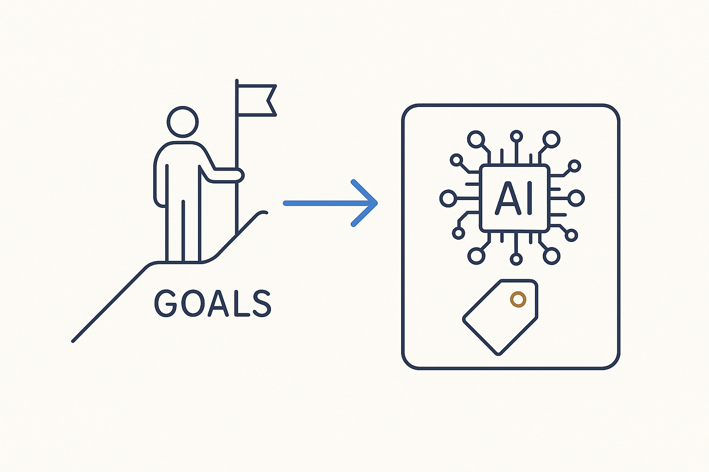

Be honest: organizations want a lot from AI and have ambitious goals, and AI offers incredible possibilities — but it comes with a price. It doesn't happen overnight. It takes a real transformation of the way we work.

> Be honest: organizations want a lot from AI and have ambitious goals, and AI offers incredible possibilities — but it comes with a price. It doesn't happen overnight. It takes a real transformation of the way we work.
Let’s be honest with each other. Organizations want a great deal from AI right now, and the ambitions are high — rightly so, because AI genuinely offers incredible possibilities. But those possibilities come with a price, and pretending otherwise sets everyone up to be disappointed. The tools are not a magic switch you flip; the value on the other side is real, and so is the cost of getting there.
And it does not happen overnight. You cannot buy the outcome, run one program, and expect the transformation to have occurred. What it actually takes is a real transformation of the way we work — the structure, the discipline, the redesigned processes, the continuous learning, the people with the right attitude. That is the price: sustained effort and changed habits over time, not a purchase and a press release.
Saying this plainly is not pessimism — it is what makes the ambition achievable. Name the price honestly, commit to paying it, and the incredible possibilities become reachable instead of hype. The organizations that accept the deal — big possibilities, real transformation, no overnight shortcut — are the ones that will actually get there.
Where it lives: the signature principle of Breakthrough Modeling — the honest deal: great possibilities, real price, no shortcut.